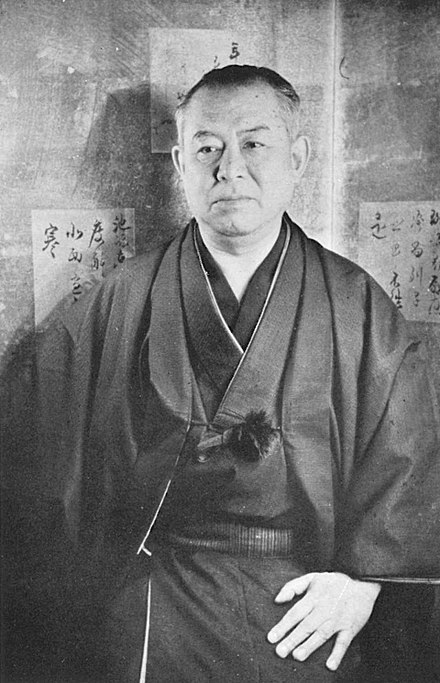

Jun'ichirō Tanizaki (谷崎 潤一郎, Tanizaki Jun'ichirō, 24 July 1886 – 30 July 1965) was one of the major writers of modern Japanese literature, and he is perhaps the most popular Japanese novelist after Natsume Sōseki. Some of his works present a shocking world of sexuality and destructive erotic obsessions. Others, less sensational, subtly portray the dynamics of family life in the context of the rapid changes in 20th-century Japanese society. Frequently his stories are narrated in the context of a search for cultural identity in which constructions of the West and Japanese tradition are juxtaposed.
He was one of six authors on the final shortlist for the Nobel Prize in Literature in 1964, the year before his death.
